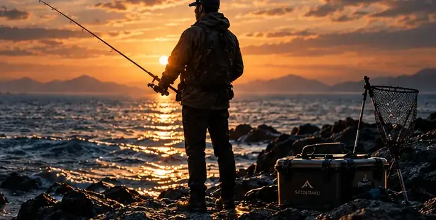

楽しみ方を見つける
サビキ・ちょい投げから、条件に合うはじめの一歩を。

SOTOJITAKU / FISHING
いつもの休日が、
水辺までつづいていく。
魚の名前も、竿の種類も知らなくて大丈夫。
あなたに合う楽しみ方と、最初の一匹までの支度を。
約2〜3分・登録不要・持っている物を活かして
YOUR FIRST FISHING DAY
だれと行くか。どんな時間にしたいか。
ひとつずつ選ぶと、あなたの一日が見えてきます。
サビキ・ちょい投げから、条件に合うはじめの一歩を。
全部そろえなくて大丈夫。足りないものだけを整理します。
安全確認と準備の手順まで、一緒に確かめます。
PR 楽天アフィリエイト等の広告を利用しています。購入により運営者に成果報酬が入る場合があります。